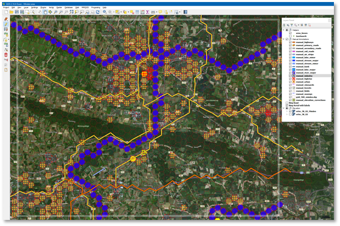
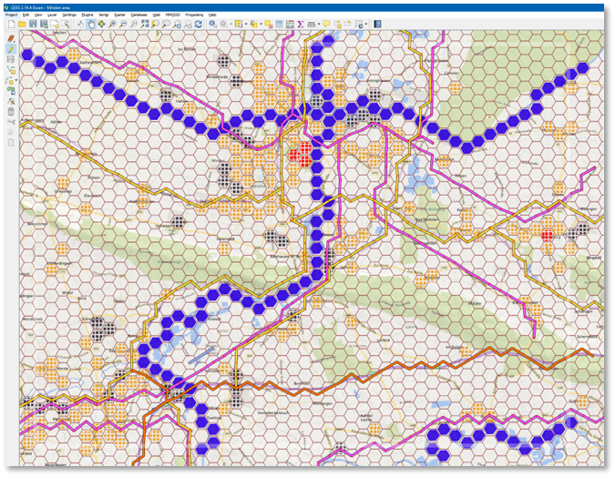
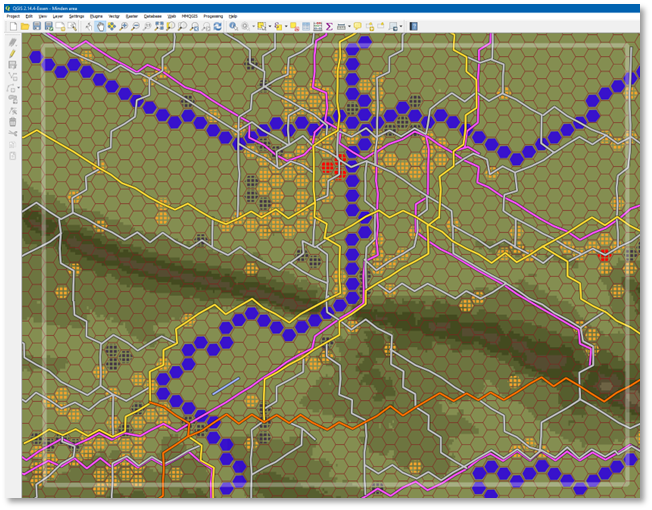
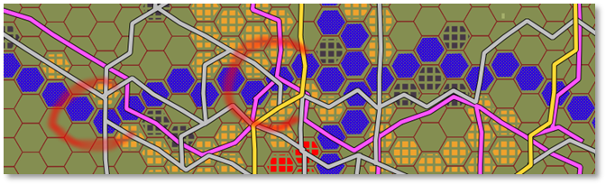
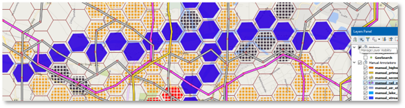
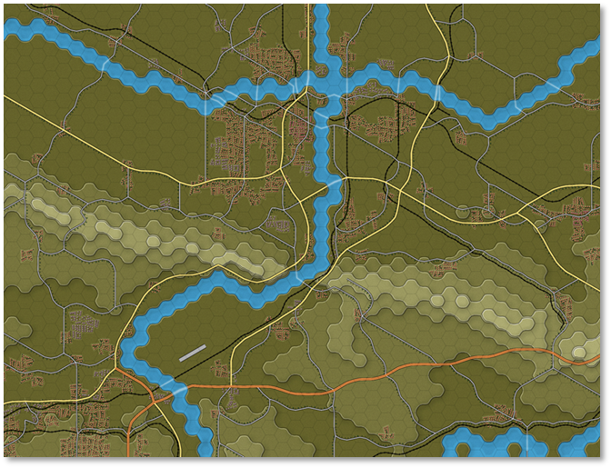

Drawing on Our Map: Towns, Minor Roads, and Railroads
We will further dress up our map by adding full hex rural, high rise and industrial areas.
Built-up Areas and Crisp, Clear Maps
Although QGis and the Flashpoint Map Values Scanner do not impose a style on you, I do recommend staying with a crisp and clear style, introduced with Flashpoint Campaigns: Red Storm. Since built-up terrain is, in terms of game tactics, very different from other terrain, built-up terrain is not to be mixed with other terrain in the same hex. This clear style makes the map straightforward to read.
As a rule-of-thumb, do not turn a hex into a built-up hex unless the satellite map shows that most of the hex is filled with built-up terrain. When in doubt about the extents of the village, trim the outskirts of the villages.
When in doubt where to position the built-up hex (amidst terrain all partially covered by buildings), pick the location where it makes most sense on the game map, such as road crossings or riverbanks.
Drawing Built-up Areas
We draw the built-up areas in the same way we’ve drawn the major river, by copying, pasting, and moving a hex shape polygon. Select the manual_river_major layer, select a hex shape on that layer, and copy (Ctrl+C). Next, select the manual_urban_layer, enable it for editing, and paste the hex shape. It will show up in urban style (not as a major river).
Note
In QGis you can easily copy (or cut) shapes from one layer into another layer. This way, you can quickly change the hex contents from urban to high rise, or a road from highway to primary road.
Below, you can see the result, with urban, high-rise (red) and (hard to see) industrial zones (dark greyish).

Figure 66 Minden covered with manually placed full-hex built-up area annotations
DrawingRailroads
Perhaps a pet peeve of mine, but I do like to have rail roads drawn on the map. If a railroad bridge can carry a diesel locomotive, it can carry armored vehicles… FCSS supports rail roads and railroad bridges.
Railroads are a lot easier to spot on the Bing roads “underlay”, so disable the Bing satellite map and activate the Bing roads “underlay”. Draw the railroads in the same way as the highways and primary roads have been drawn. Personally, I like to recreate the original alignment (left or right of the road) when drawing railroads in the same hex as roads.

Figure 67 Railroads drawn on the map, using the Bing Roads "underlay"
Drawing Secondary Roads
Next, draw the secondary roads on the map. Use the color coding and road size on the Bing map to identify the secondary roads. Germany makes identifying its secondary roads a bit easier, by issuing road designations to significant secondary roads: the “L” roads are Landesstraße, provincial roads, and the “K” roads are Kreisstraße, maintained by the county. There are a few exceptions to this rule:
-
Bayern/Bavaria not using the “K” designation for its Kreisstraße, but using a two or three letter county abbreviation instead; and
-
Saarland, Hamburg, Bremen and Berlin not having Kreisstraße
One thing to keep in mind is that built-up terrain is given high mobility values, almost as high as road hexes, so there is no need to draw a dense road network in built-up areas.

Figure 68 Secondary roads added to the Minden map
A Critical Review of Our Results and a Few Fixes
In the above map, some details do not make much sense. In two river hexes, we can see (rail) road bifurcations, suggesting an unrealistic bridge construction. This can easily be fixed by editing the road poly lines, shifting the bifurcation out of the full-size river hex in a way that most closely reflects the real-world.
With a layer selected for editing, use Edit menu, “Node Tool” to move around individual nodes of a polyline.

Figure 69 Two unrealistic (rail) road junctions inside a major river hex

Figure 70 Roads and rail-roads trajectories reworked to avoid junctions in full river hexes
Intermezzo: OTS Render of Our Works-in-progress
After another trip to OTS HQ, we receive the following render of our works-in-progress map in return.

Figure 71 OTS render of our works-in-progress